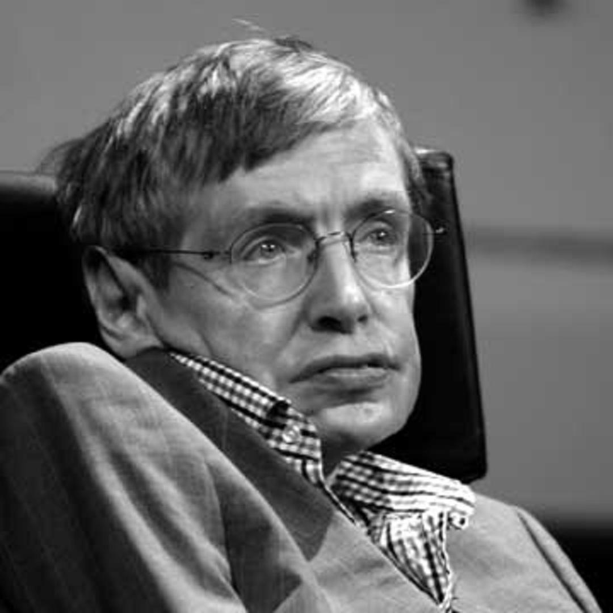

Stephen Hawking
A tribute page to one of humanities greatest mind.
A tribute page to one of humanities greatest mind.
Stephen Hawking, in full Stephen William Hawking, (born January 8, 1942, Oxford, Oxfordshire, England—died March 14, 2018, Cambridge, Cambridgeshire), English theoretical physicist whose theory of exploding black holes drew upon both relativity theory and quantum mechanics. He also worked with space-time singularities.
Hawking studied physics at University College, Oxford (B.A., 1962), and Trinity Hall, Cambridge (Ph.D., 1966). He was elected a research fellow at Gonville and Caius College at Cambridge. In the early 1960s Hawking contracted amyotrophic lateral sclerosis, an incurable degenerative neuromuscular disease. He continued to work despite the disease’s progressively disabling effects.
In his work, and in collaboration with Penrose, Hawking extended the singularity theorem concepts first explored in his doctoral thesis. This included not only the existence of singularities but also the theory that the universe might have started as a singularity. Their joint essay was the runner-up in the 1968 Gravity Research Foundation competition. In 1970, they published a proof that if the universe obeys the general theory of relativity and fits any of the models of physical cosmology developed by Alexander Friedmann, then it must have begun as a singularity. In 1969, Hawking accepted a specially created Fellowship for Distinction in Science to remain at Caius.
In 1970, Hawking postulated what became known as the second law of black hole dynamics, that the event horizon of a black hole can never get smaller. With James M. Bardeen and Brandon Carter, he proposed the four laws of black hole mechanics, drawing an analogy with thermodynamics. To Hawking's irritation, Jacob Bekenstein, a graduate student of John Wheeler, went further—and ultimately correctly—to apply thermodynamic concepts literally.

In the early 1970s, Hawking's work with Carter, Werner Israel, and David C. Robinson strongly supported Wheeler's no-hair theorem, one that states that no matter what the original material from which a black hole is created, it can be completely described by the properties of mass, electrical charge and rotation. His essay titled "Black Holes" won the Gravity Research Foundation Award in January 1971. Hawking's first book, The Large Scale Structure of Space-Time, written with George Ellis, was published in 1973.
Hawking returned to Cambridge in 1975 to a more academically senior post, as reader in gravitational physics. The mid-to-late 1970s were a period of growing public interest in black holes and the physicists who were studying them. Hawking was regularly interviewed for print and television. He also received increasing academic recognition of his work. In 1975, he was awarded both the Eddington Medal and the Pius XI Gold Medal, and in 1976 the Dannie Heineman Prize, the Maxwell Medal and Prize and the Hughes Medal. He was appointed a professor with a chair in gravitational physics in 1977. The following year he received the Albert Einstein Medal and an honorary doctorate from the University of Oxford.
In 1979, Hawking was elected Lucasian Professor of Mathematics at the University of Cambridge. His inaugural lecture in this role was titled: "Is the End in Sight for Theoretical Physics?" and proposed N = 8 supergravity as the leading theory to solve many of the outstanding problems physicists were studying. His promotion coincided with a health-crisis which led to his accepting, albeit reluctantly, some nursing services at home. At the same time, he was also making a transition in his approach to physics, becoming more intuitive and speculative rather than insisting on mathematical proofs. "I would rather be right than rigorous", he told Kip Thorne. In 1981, he proposed that information in a black hole is irretrievably lost when a black hole evaporates. This information paradox violates the fundamental tenet of quantum mechanics, and led to years of debate, including "the Black Hole War" with Leonard Susskind and Gerard 't Hooft.
Hawking died at his home in Cambridge on 14 March 2018, at the age of 76. His family stated that he "died peacefully". He was eulogised by figures in science, entertainment, politics, and other areas. The Gonville and Caius College flag flew at half-mast and a book of condolences was signed by students and visitors. A tribute was made to Hawking in the closing speech by IPC President Andrew Parsons at the closing ceremony of the 2018 Paralympic Winter Games in Pyeongchang, South Korea.
His private funeral took place on 31 March 2018, at Great St Mary's Church, Cambridge. Guests at the funeral included The Theory of Everything actors Eddie Redmayne and Felicity Jones, Queen guitarist and astrophysicist Brian May, and model Lily Cole. In addition, actor Benedict Cumberbatch, who played Stephen Hawking in Hawking, astronaut Tim Peake, Astronomer Royal Martin Rees and physicist Kip Thorne provided readings at the service. Although Hawking was an atheist, the funeral took place with a traditional Anglican service. Following the cremation, a service of thanksgiving was held at Westminster Abbey on 15 June 2018, after which his ashes were interred in the Abbey's nave, between the graves of Sir Isaac Newton and Charles Darwin.
Hawking received numerous awards and honours. Already early in the list, in 1974 he was elected a Fellow of the Royal Society (FRS).
Hawking was also a member of the American Academy of Arts and Sciences (1984), the American Philosophical Society (1984), and the United States National Academy of Sciences (1992).
Hawking received the 2015 BBVA Foundation Frontiers of Knowledge Award in Basic Sciences shared with Viatcheslav Mukhanov for discovering that the galaxies were formed from quantum fluctuations in the early Universe. At the 2016 Pride of Britain Awards, Hawking received the lifetime achievement award "for his contribution to science and British culture". After receiving the award from Prime Minister Theresa May, Hawking humorously requested that she not seek his help with Brexit.
Stephen Hawking Medal for Science Communication
Hawking was a member of the advisory board of the Starmus Festival, and had a major role in acknowledging and promoting science communication. The Stephen Hawking Medal for Science Communication is an annual award initiated in 2016 to honour members of the arts community for contributions that help build awareness of science. Recipients receive a medal bearing a portrait of Hawking by Alexei Leonov, and the other side represents an image of Leonov himself performing the first spacewalk along with an image of the "Red Special", the guitar of Queen musician and astrophysicist Brian May (with music being another major component of the Starmus Festival).
The Starmus III Festival in 2016 was a tribute to Stephen Hawking and the book of all Starmus III lectures, "Beyond the Horizon", was also dedicated to him. The first recipients of the medals, which were awarded at the festival, were chosen by Hawking himself. They were composer Hans Zimmer, physicist Jim Al-Khalili, and the science documentary Particle Fever.